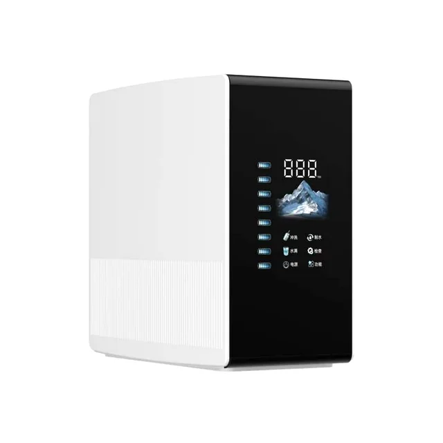
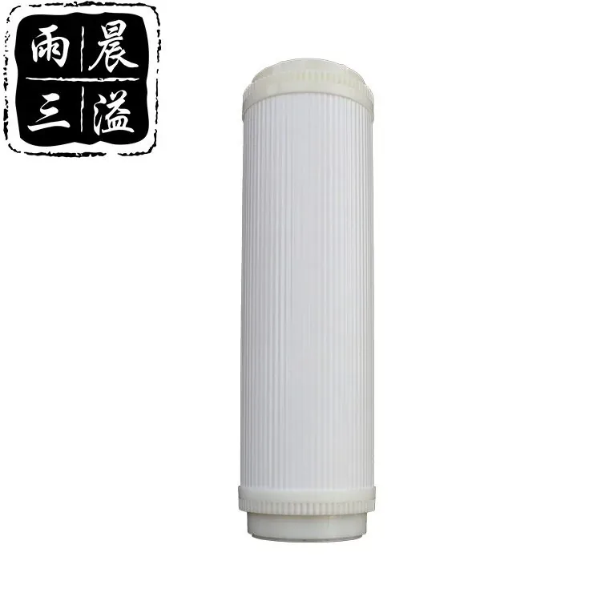
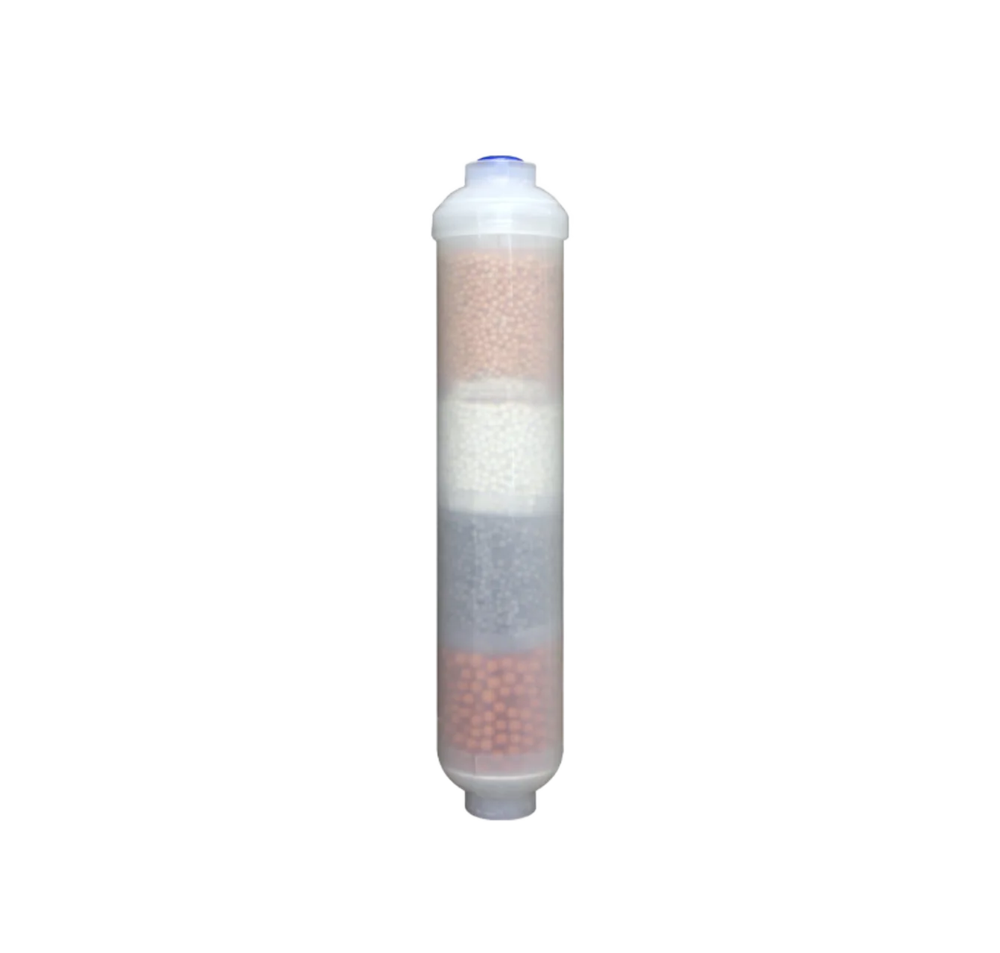
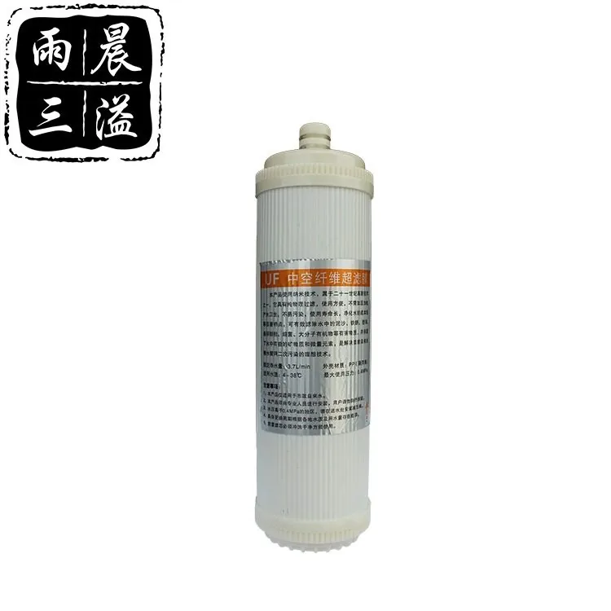
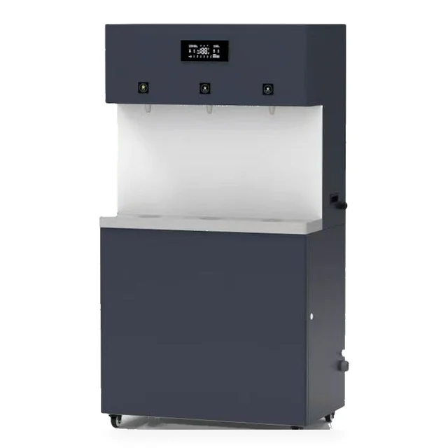
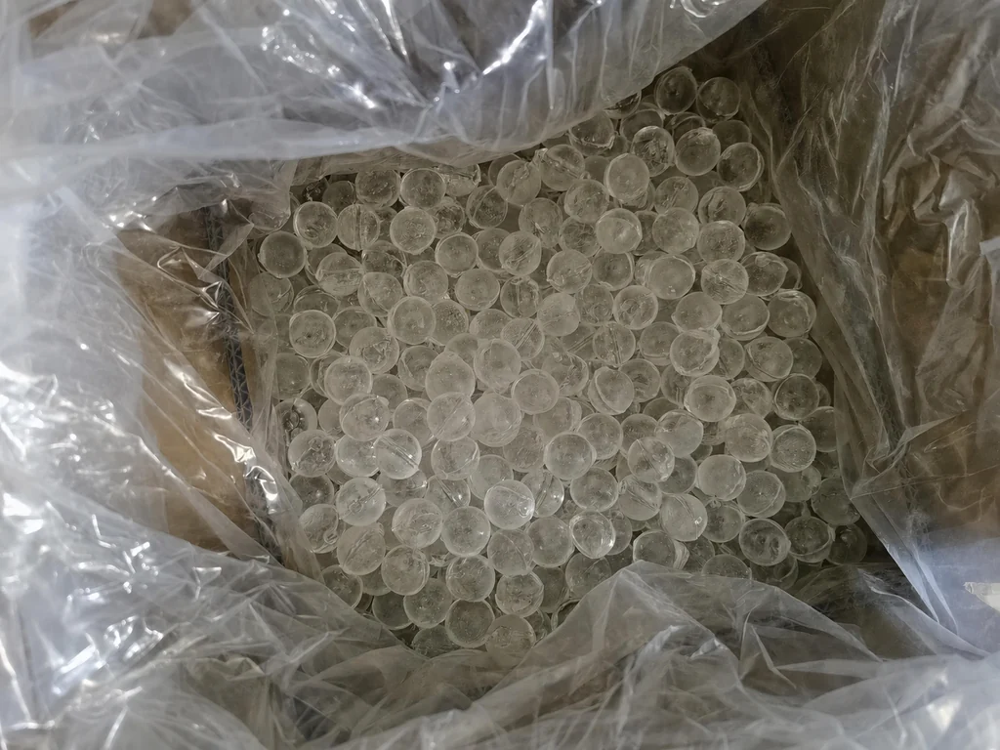

Osmoseurs sur mesure à 5, 6 ou 7 étapes
Osmoseurs sur mesure à 5, 6 ou 7 étapes Porte-filtres de 10 et 20 pouces
Porte-filtres de 10 et 20 pouces Porte-filtre Jumbo en acier inoxydable SUS 304
Porte-filtre Jumbo en acier inoxydable SUS 304
Catégorie purificateurs d'eau RO
Purificateur d'eau RO — Yuchen Water fournit des solutions de filtration d'eau pour distributeurs, projets et marques.
Confirmez le raccordement et les exigences du projet avant de demander un devis.

Purificateur d'eau RO — Yuchen Water fournit des solutions de filtration d'eau pour distributeurs, projets et marques.

PP — guide technique de sélection. Confirmez le raccordement et les exigences du projet avant de demander un devis.

CTO / PCO — guide technique de sélection. Confirmez le raccordement et les exigences du projet avant de demander un devis.

UDF — guide technique de sélection. Confirmez le raccordement et les exigences du projet avant de demander un devis.

T33 — guide technique de sélection. Confirmez le raccordement et les exigences du projet avant de demander un devis.

Cartouche filtrante RO — Yuchen Water fournit des solutions de filtration d'eau pour distributeurs, projets et marques. — ro membrane

Cartouche filtrante UF (uf membrane filter) — Yuchen Water fournit des solutions de filtration d'eau pour distributeurs, projets et marques.

Distributeur d'eau — Yuchen Water fournit des solutions de filtration d'eau pour distributeurs, projets et marques.

Boîtier de filtre — Yuchen Water fournit des solutions de filtration d'eau pour distributeurs, projets et marques. — filter housing

Siliphos balls — média filtrant spécialisé. polyphosphate · Siliphos balls Ø19 mm, Ø10 mm, Ø3–8 mm; particules concassées 6–12 mm / 4–10 mm; poudre. Confirmez le raccordement et les exigences du projet avant de demander un devis. OEM/ODM: palette en bois · carton principal · petites boîtes · petites bouteilles.